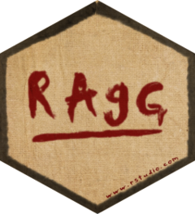

ragg 
This package provides graphic devices for R based on the AGG library developed by the late Maxim Shemanarev. AGG provides both higher performance and higher quality than the standard raster devices provided by grDevices. For a comparison with the default devices, see the performance and quality vignettes.
Installation
The package can be installed from CRAN with install.packages('ragg') or, if the development version is desired, directly from github:
# install.packages('devtools')
devtools::install_github('r-lib/ragg')Use
ragg provides drop-in replacements for the png, jpeg, and tiff graphic devices provided by default from the grDevices packages and can both produce png, jpeg and tiff files. Notable features, that sets itself apart from the build-in devices, includes:
- Faster (up to 40% faster than anti-aliased cairo device)
- Direct access to all system fonts
- Advanced text rendering, including support for right-to-left text, emojis, and font fallback
- High quality anti-aliasing
- High quality rotated text
- Support 16-bit output
- System independent rendering (output from Mac, Windows, and Linux should be identical)
You can use it like any other device. The main functions are agg_png(), agg_jpeg() and agg_tiff(), all of which have arguments that closely match those of the png(), jpeg() and tiff() functions, so switching over should be easy.
library(ragg)
library(ggplot2)
file <- knitr::fig_path('.png')
on_linux <- tolower(Sys.info()[['sysname']]) == 'linux'
fancy_font <- if (on_linux) 'URW Chancery L' else 'Papyrus'
agg_png(file, width = 1000, height = 500, res = 144)
ggplot(mtcars) +
geom_point(aes(mpg, disp, colour = hp)) +
labs(title = 'System fonts — Oh My! 😱') +
theme(text = element_text(family = fancy_font))
invisible(dev.off())
knitr::include_graphics(file)
Further, it provides an agg_capture() device that lets you access the device buffer directly from your R session.
cap <- agg_capture(width = 1000, height = 500, res = 144)
plot(1:10, 1:10)
scatter <- cap()
invisible(dev.off())
# Remove margins from raster plotting
par(mai = c(0, 0, 0, 0))
plot(as.raster(scatter))

Code of Conduct
Please note that the ‘ragg’ project is released with a Contributor Code of Conduct. By contributing to this project, you agree to abide by its terms.